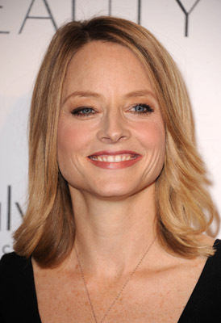

Perioada: 23 oct- 21 nov; Verb: Eu doresc Element: Apa Calitate: Fix Energie: Yin
Guvernatori: Marte si Pluton Casa astrologică: Casa a VIII-a Culoare: Rosu, negru Piatra prețioasă: Topaz Anatomie: Organe genitale, sistem reproducător, aparat urinar Zi: Marți
Scorpioni Celebri

ELLEN POMPEO
JULIA ROBERTS

JODIE FOSTER
Personalitate
Mândru, puternic și stăpân pe sine, scorpionul este un semn zodiacal ce câștigă orice argument și se poate descurca în orice situație complicată, ieșind învingător. Este însă arogant și foarte direct, de aceea multă lume întreabă îi întreabă pe aceștia pentru o părere onestă.
Profesii Potrivite
Li se potrivesc toate profesiile care cer profunzime și spirit pǎtrunzǎtor. Au un fin simț de psiholog și o mare capacitate de a scoate la ivealǎ ascunzișurile lucrurilor. De aceea, pot fi excelenți detectivi, psihologi, cercetǎtori, oameni de științǎ.